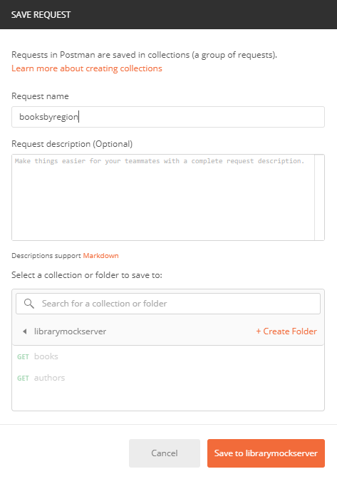
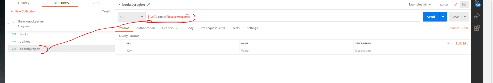
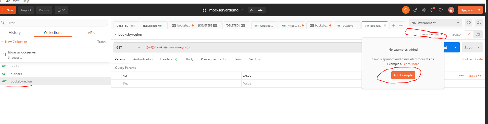
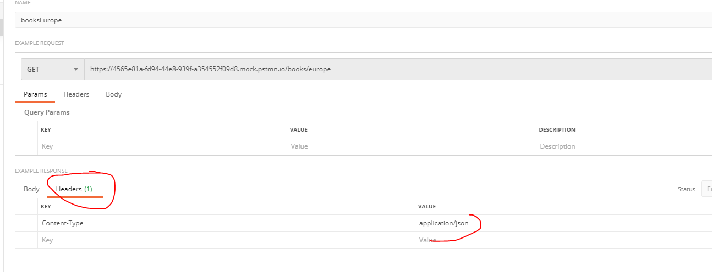
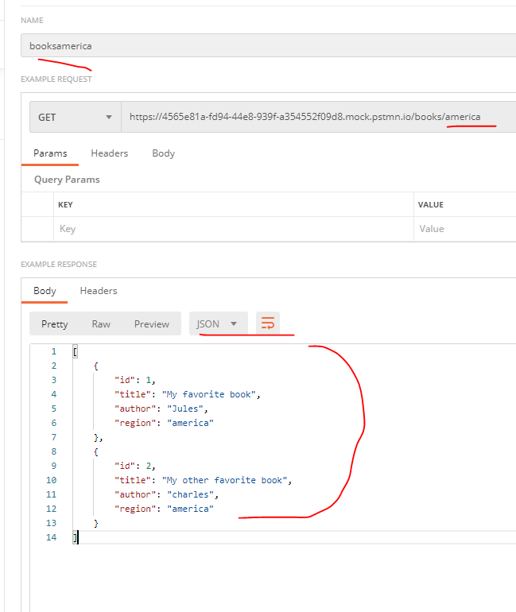
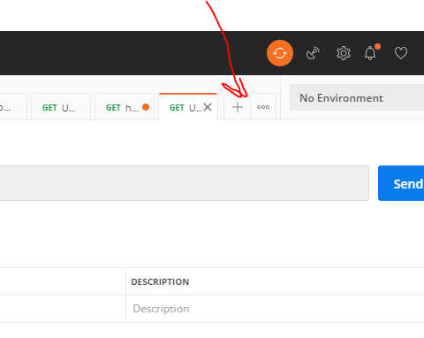
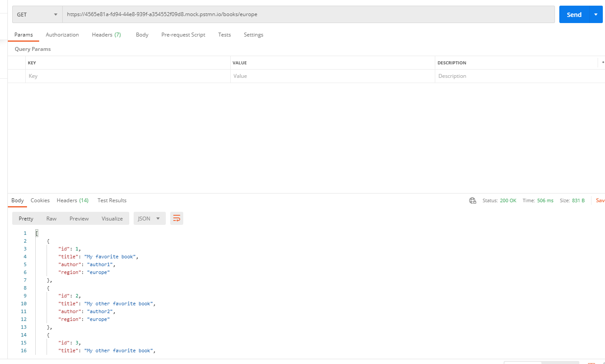

Postman Mock Server- Configuring multiple responses 28th Jan 2021
In this blog we will learn how to configure multiple responses for same response status code and how to use Wildcards. If you want to see how to use Postman (basic usage) then refer my blog Postman basic setup
Configuring multiple responses for same response code
Let's take books egample we saw in Postman basic setup a step further.Say, in this case, we have books by regions. We have 3 books in Europe region( I know it's too less but just an egample :)) and 2 books in America region. The idea is to show you how to configure two Examples for same status code using Wildcards
You can download both sample responses from my github link Github link to sample responses Files are named booksamerica and bookseurope.
-
Step 1). Click on librarymockserver. Then, click
on New on the top left,and then selectrequest
request.Name the request "booksbyregion" and add it to
existing collection

-
Step 2). Click on the newly generated request i.e
booksbyregion and paste the url
{{url}}/books/{{customregion}}. If you donot have the
variable configured in the mock server's associated
environment,then those variables are treated as
Wildcards. In this eg, {{url}} was generated
automatically while creating the mock server and was associated
to the environment, if any.However,{{customregion}} is
NOT a variable but a wildcard which means it will get the value
dynamcially based on the URL. Image for reference below

- Step 3) .After adding above url, donot forget to save the request.
-
Step 4) Let's configure Examples for this request.Click
on "booksbyregion" again and then click on "Add Example"

- Step 5) Clicking on "Add Example" would open below.Let's configure books response for Europe region. As mentioned previously, you can get the sample JSON from my github link. Github link to sample responses
-
Step 5 contd) If you look at below image, you need to
notice few things
marked in red
- You can save the Example with any name. I chose booksEurope
- See how Wildcard {{customregion}} is replaced with europe in this egample
- Save the response Body format as JSON and also paste the expected JSON response( 3 records)
- In the Headers of Example Respones, add content-type as application/JSON
Headers of Example Respones 
-
Step 6) Same way you can configure booksAmerica sample
response as well.Image for reference below

- Info Now you have 2 sample responses configured for your request named booksbyregion. Two sample responses/Examples configured are booksEurope and booksAmerica we created above
-
Step 7) Let's create a mock request to invoke one of the
saved example responses.Click on the + icon

-
Step 7 contd) Hit the URL and you will get the desired
response configured in books_europe

- Step 8) Same way you can invoke america endpoint as well
In my Postman basic's blog Postman basic setup , i mentioned how incoming request is mapped to one of the saved examples.In that blog please refer section "How the incoming mock request matches one of the saved Egample".
In that blog I also mentioned how there is a Postman's algortihm which try to match the incoming request to closest possible saved example.I wont get into full algorithm but I can show you a quick example of how minor typos are ignored by Postman and still get us desired response.Lets look below
And that's it. Hope you undertood how to customize JSON server. .Email me at "techspacedeck@gmail.com" incase you have queries. Alternatively, you can fill the "CONTACT" form or drop a comment below